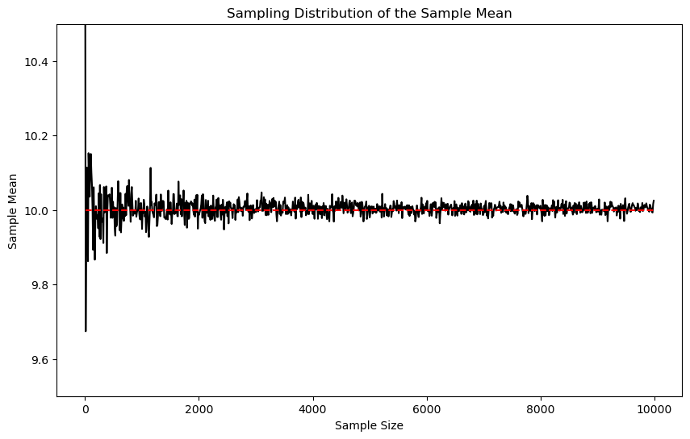
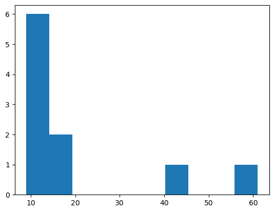
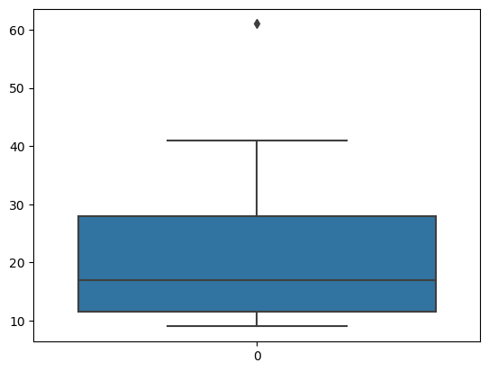
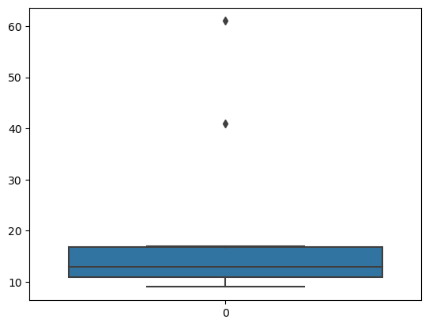
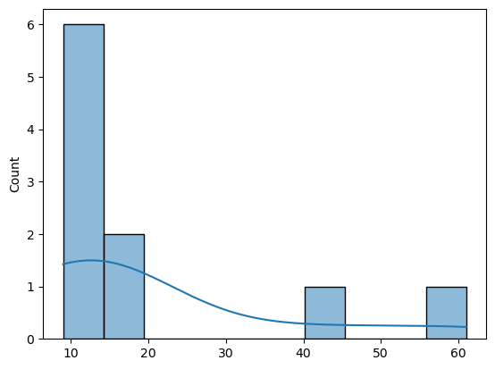
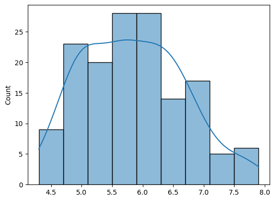

import numpy as np
import matplotlib.pyplot as plt
import matplotlib.animation as animation
from IPython.display import HTML
# Set up the figure, the axis, and the plot elements
# fig, axs = plt.subplots(3, 1, figsize=(7, 8))
# fig.tight_layout(pad=3.0)
N = 10000 # size of the population
n = 10 # sample size
K = 1000 # number of times to sample
# # Create the source distribution: Here I'm using a normal distribution for simplicity
# mu = 10 # mean
# sigma = 1 # standard deviation
# source_data = np.random.normal(mu, sigma, N)
# sample_means = []
# def update(num):
# # Clear the previous histograms
# for ax in axs:
# ax.cla()
# x_min = min(source_data) - 1
# x_max = max(source_data) + 1
# # First panel: the population histogram
# axs[0].hist(source_data, bins=50, color='blue', alpha=0.7)
# axs[0].set_title("Source Distribution")
# axs[0].set_xlim(x_min, x_max)
# axs[0].text(x_max - 0.1 * (x_max - x_min), 0.8 * N/50,
# 'Mean: {:.2f}\nStd: {:.2f}'.format(np.mean(source_data), np.std(source_data)),
# va="top", ha="right")
# # Second panel: sample histogram
# sample = np.random.choice(source_data, n)
# axs[1].hist(sample, bins=50, color='green', alpha=0.7)
# axs[1].set_title("Sample of Size {}".format(n))
# axs[1].set_xlim(x_min, x_max)
# axs[1].set_ylim(0, 15)
# axs[1].text(x_max - 0.1 * (x_max - x_min), 15 * 0.2666,
# 'Mean: {:.2f}\nStd: {:.2f}'.format(np.mean(sample), np.std(sample)),
# va="top", ha="right")
# # Third panel: sample mean histogram
# # Add the mean of the current sample to sample_means
# sample_means.append(np.mean(sample))
# axs[2].hist(sample_means, bins=50, color='red', alpha=0.7)
# axs[2].set_title("Distribution of Sample Means (n={})".format(n))
# axs[2].set_xlim(x_min, x_max)
# axs[2].set_ylim(0, 30)
# axs[2].text(x_max - 0.1 * (x_max - x_min), 30 * 0.2666,
# 'Mean: {:.2f}\nStd: {:.2f}'.format(np.mean(sample_means), np.std(sample_means)),
# va="top", ha="right")
# plt.draw()
# ani = animation.FuncAnimation(fig, update, frames=K, repeat=False)
# # Display the animation in the Jupyter Notebook
# HTML(ani.to_jshtml())Tema 0. Estadística descriptiva
En la jerga de DS por variable vamos a entender la medición de una característica o atributo. Ejemplos de variables son: edad, peso, longitud, latitud, precio, ingreso, etc.
Clasificaciones de variables
Las variables pueden ser clasificadas por su representación numérica, o por cómo son medidas (es decir, cómo son asignados números a los atributos de acuerdo a una regla, su escala de medición). Las variables también pueden ser clasificadas de acuerdo a cómo están asociadas unas con otras.
Esta es una clasificación de acuerdo a su representación numérica. Las variables discretas son contables infintas (pueden sear asignados números naturales \(\mathbb{N}=\{1, 2, 3, \dots\}\)). Las variables continuas son incontables infinitas (pueden ser asignadas a los números reales \(\mathbb{R}\)).

Tipos de variables (tomada de OpenInstro Statistics)
Las variables categóricas podrían considerarse un tipo de variable discreta, pero no es del todo cierto. Las variables categóricas no tienen porqué seguir un orden en particular ni ser asignadas a un subconjunto de números. Por ejemplo, la variable sexo puede ser tan bien representada por (0, 1) como por (1, 2). La variable ordinal Nivel educativo puede ser tan bien representada con (0, 1, 2, 3) como por (1,2, 3, 4) etc.
De acuerdo a su nivel de medición, pueden ser clasificadas como nominales, ordinales, de intervalo y de razón.
Las variables con escala nominal no tienen una correspondencia numérica específica. Se les asignan números solo para identificarlas. Las operaciones aritméticas de suma, resta, multiplicación, división, etc, no tienen sentido, porque el número que se les asigna no implica más o menos cantidad de su atributo. La única operación permitida es la de conteo, su estadística descriptiva se hace con frecuencias y porcentajes.
Las variables en escala ordinal tampoco tienen una correspondencia, siempre y cuando sean asignados valores que preserven el orden de rango. No pueden describir grados de diferencia ni magnitud relativa entre dos observaciones con diferente orden. Por ejemplo, Alberto califica de bueno un libro que Luis calificó con de malo en una escala de \(\{\text{pésimo, malo, regular, bueno, excelente}\}\). No podemos decir que el libro fue doblemente bueno para Alberto que para Luis. También se pueden describir con frecuencias y porcentajes, pero además con mediana y rango.
Las las variables en escala de intervalo sí tienen una correspondencia precisa que debe preservar orden y magnitud. Se puede sumar y restar con valores en esta escala, pero no dividir ni multiplicar. El 0 es arbitrario (como en los grados Celcius) por lo que un 0 no implica ausencia del atributo, y no se puede decir que 20 °C es el doble de caliente que 10 °C. Para ver esto, por ejemplo, 20C = 68F y 10C = 50F. Mientras que 20/10 es 2, 68/50 no. Todo intervalo en una escala de intervalo es igual que otro intervalo en la escala: \(15-10=30 - 25\). Sus estadísticos descriptivos son media, desviación estándar, varianza (y por extensión mediana y rango).
Las variables en escala de razón tienen todas las propiedades de las intervalares (conservan orden y magnitud), además de un 0 verdadero, en el que el 0 sí significa una ausencia de magnitud. Se puede sumar, restar, dividir y multiplicar en estas escalas. Pueden expresar magnitudes relativas (e.g., 4 metros es el doble de 2 metros). Sus estadísticos descriptivos, además de media, desviación estándar, varianza, mediana y rango, son la media geométrica, coeficiente de variación.
Estadísticos descriptivos
La estadística se divide clásicamente en dos grandes ramas: la descriptiva y la inferencial (a su vez en estimación y prueba de hipótesis). La estadística descriptiva se ocupa de resumir y visualizar los datos, mientras que la inferencial se ocupa de hacer inferencias sobre la población a partir de una muestra. Existen dos tipos de estadísticos descriptivos: los de locación y los de dispersión.
¿Por qué es necesaria la estadística? Para responder a esto, necesitamos hacer una diferencia entre población y muestra.
La población es el conjunto de todos los individuos de interés en un estudio. Por individuos nos referimos a personas, animales, plantas, ítems, obetos, etc.
La muestra es un subconjunto de la población. La estadística descriptiva se ocupa de resumir y visualizar los datos de la muestra, mientras que la inferencial se ocupa de hacer inferencias sobre la población a partir de una muestra.
Si tuviéramos acceso a todos los individuos de la población, no necesitaríamos estadística. Pero en la práctica, esto es imposible. Por ejemplo, si quisiéramos saber la edad de todos los habitantes de una ciudad, no podríamos hacerlo. En cambio, podemos tomar una muestra de la población, y a partir de ella, hacer inferencias sobre la población.
Estadísticos según la variable
Las operaciones estadísticas que están definidas o son permitidas varían según el tipo de variable. Vamos a describir las operaciones y medidas estadísticas comúnmente aplicadas a cada tipo:
Numéricas
1.1. Continuas:
Medidas de tendencia central: media (promedio), mediana, moda.
Medidas de dispersión: desviación estándar, varianza, rango, rango intercuartílico.
Correlaciones: coeficiente de correlación de Pearson, coeficiente de Spearman (si bien es para variables ordinales, puede usarse en datos continuos con relaciones no lineales).
Modelado: Regresión lineal, regresión polinomial, entre otros.
1.2. Discretas:
Medidas de tendencia central: media, mediana, moda.
Medidas de dispersión: desviación estándar, varianza, rango.
Distribuciones: Distribución binomial, distribución de Poisson, entre otras.
Correlaciones: Las mismas que para variables continuas, aunque en ciertos contextos se pueden considerar de manera diferente.
Categóricas
2.1. Nominales:
Frecuencias: Conteos y porcentajes.
Asociación: Chi-cuadrado de independencia, coeficiente de contingencia, Cramér V.
Comparaciones: Proporciones, razones.
Modelado: Regresión logística multinomial, análisis discriminante, entre otros.
2.2. Ordinales:
Medidas de tendencia central: mediana, moda.
Medidas de dispersión: rango, rango intercuartílico.
Correlaciones: coeficiente de correlación de Spearman, coeficiente de correlación de Kendall.
Asociación: Test de tendencia para datos ordinales.
Modelado: Regresión logística ordinal, entre otros.En la simulación anterior, en el segundo panel, la media va cambiando cuando se cambia la muestra. A cada una de esas medias les llamamos “media muestral”. Dado que esa media se toma sobre una muestra, su valor no necesariamente coincide con el valor de la media poblacional. A la diferencia de la media muestral y la media poblacional le llamamos “error muestral”. El error muestral es una variable aleatoria, porque depende de la muestra que se tome, por lo que su valor cambia aleatoriamente conforme cambia la muestra.
En el tercer panel se muestra la media de todas las medias muestrales. Al conjunto de medias muestrales le llamamos “distribución muestral de medias”. La media de la distribución muestral de medias es igual a la media poblacional. Este es un resultado muy importante, porque nos dice que si tomamos muchas muestras de una población, y calculamos la media de cada una de esas muestras, la media de todas esas medias muestrales es igual a la media poblacional.
La desviación estándar de una distribución muestral de medias es conocida como “error estándar de la media”. El error estándar de la media es una medida de la variabilidad de las medias muestrales. Si el error estándar de la media es pequeño, significa que las medias muestrales son similares entre sí, y por lo tanto, similares a la media poblacional. Si el error estándar de la media es grande, significa que las medias muestrales son muy diferentes entre sí, y por lo tanto, muy diferentes a la media poblacional.
Ahora, normalmente para hacer estadística no tomamos muchas muestras y obtenemos la media de cada una de ellas. En lugar de eso, tomamos una sola muestra y calculamos la media de esa muestra. La media de esa muestra es una estimación de la media poblacional. ¿Por qué puedo usar la media muestral como estimador de la media poblacional? Básicamente por dos resultados importantísimos de la estadística:
- La ley de los grandes números: a medida que el tamaño de la muestra aumenta, la media muestral se aproxima a la media poblacional.
- El teorema del límite central: al tomar muchas muestras de una población, la distribución muestral de medias se aproxima a una distribución normal, sin importar la distribución de la población. La media de la distribución muestral de medias es igual a la media poblacional, y la desviación estándar de la distribución muestral de medias es igual al error estándar de la media.
Esto nos lleva a dos propiedades de la media muestral:
- Es un estimador insesgado de la media poblacional. Esto significa que, en promedio, la media muestral es igual a la media poblacional. Dicho de otra manera, el valor esperado de la media muestral es igual a la media poblacional.
- Es un estimador eficiente de la media poblacional. Esto significa que la varianza de la media muestral es menor que la varianza de cualquier otro estimador de la media poblacional. Dicho de otra manera, la media muestral es el estimador de la media poblacional que tiene la menor varianza.
- Es un estimador consistente de la media poblacional. Esto significa que, a medida que el tamaño de la muestra aumenta, la media muestral se aproxima a la media poblacional. Dicho de otra manera, la media muestral es un estimador de la media poblacional que converge en probabilidad a la media poblacional. Matemáticamente, para un estimador \(\hat\theta\) de un parámetro \(\theta\), esto se escribe como:
\[\lim_{n\to\infty} P(|\hat\theta - \theta| > \epsilon) = 0\]
para cualquier \(\epsilon > 0\).
Error estándar de la media para una muestra
Dado que el error estándar de la media (en inglés \(SEM\)) se obtiene dividiendo la desviación estándar de la población entre la raíz cuadrada del tamaño de la muestra, al no tener acceso a la desviación estándar de la población, podemos usar la desviación estándar de la muestra como una estimación de la desviación estándar de la población. >Esto nos lleva a la siguiente fórmula para el error estándar de la media:
\[SEM = \frac{s}{\sqrt{n}}\]
donde \(s\) es la desviación estándar de la muestra y \(n\) es el tamaño de la muestra. Este error disminuye conforme aumenta el tamaño de la muestra, como se ve a continuación:
N = 10000
mu = 10
sigma = 1
source_data = np.random.normal(mu, sigma, N)
# vector of sample sizes
n_vec = np.arange(1, 10000, 10)
# vector of sample means
sample_means = []
# simulate the sampling distribution of the sample mean for each sample size
for n in n_vec:
sample = np.random.choice(source_data, n)
sample_means.append(np.mean(sample))
# plot the sampling distribution of the sample mean for each sample size
plt.figure(figsize=(10, 6))
plt.plot(n_vec, sample_means, 'k-')
# real population mean
plt.plot(n_vec, [mu] * len(n_vec), 'r--')
# log transform the x-axis
# plt.xscale('log')
plt.ylim(9.5, 10.5)
plt.xlabel('Sample Size')
plt.ylabel('Sample Mean')
plt.title('Sampling Distribution of the Sample Mean')
plt.show()
De locación
Encontrar valores típicos o centrales que describan bien los datos.
- Media: \(\bar Y = \sum_{i=1}^N Y_i/N\)
- Mediana: \(\tilde{Y} = Y_{[N+1]/2}\) si \(N\) es impar; \(\tilde{Y} = (Y_{[N]/2} + Y_{[N/2 + 1]})/2\) si \(N\) es par.
- Moda: el valor más frecuente en los datos. No siempre existe, y puede haber más de una moda.
De dispersión
- Rango intercuartílico, IQR: \(Q_3 - Q_1\).
- Varianza: \(s^2=\frac{1}{n-1}\sum_{i=1}^n (y_i - \bar y)^2\)
- Desviación estándar: \(s = \sqrt{s}\),
- Desviación media absoluta: \(\text{MAD} = \frac{1}{n-1}\sum_{i=1}^n \mid y_i - \bar y\mid\)
- Rango: \(\max(y) - \min(y)\)
Conceptos adicionales
- Centrar una variable: restarle a cada observación el valor de la media de la variable. Esto se hace para que la media de la variable centrada sea igual a cero. Si \(Y\) es una variable aleatoria, entonces \(Y_c = Y - \bar Y\) es la variable aleatoria centrada.
- Estandarizar una variable: dividir cada observación entre la desviación estándar de la variable. Esto se hace para que la desviación estándar de la variable estandarizada sea igual a uno. Si \(Y\) es una variable aleatoria, entonces \(Y_s = Y/s\) es la variable aleatoria estandarizada.
- Normalizar una variable: restarle a cada observación el valor de la media de la variable y dividir el resultado entre la desviación estándar de la variable. Esto se hace para que la media de la variable normalizada sea igual a cero y la desviación estándar de la variable normalizada sea igual a uno. Si \(Y\) es una variable aleatoria, entonces \(Y_z = (Y - \bar Y)/s\) es la variable aleatoria estandarizada.
- Función cuantil: función que asigna a cada probabilidad \(p\) un valor \(q\) tal que \(P(Y \leq q) = p\). Se puede pensar como la inversa de la función de distribución acumulada.
En las siguientes celdas vamos a calcular estos estadísticos en Python. Para instalar Python, recomiendo la distribución Anaconda, que incluye Jupyter Notebook, Python y muchas librerías de análisis de datos.
- Para instalar Anaconda, sigan las instrucciones aquí.
- Para empezar a usar Jupyter Notebook, sigan las instrucciones aquí, y para una introducción muy básica a lo que necesitaremos de Python, consulta aquí.
- El uso de las librerías NumPy, Pandas y Matplotlib se explica aquí.
import pandas as pd
import seaborn as sns
from collections import Counter
# media
def mean_fun(x):
return sum(x) / len(x)
# mediana
def median_fun(x):
x.sort()
N = len(x)
if N % 2 == 0:
return (x[int(N / 2)] + x[int((N - 1) / 2)]) / 2
else:
return x[int((N - 1) / 2)]
# moda
def mode_fun(x):
n = len(x)
data = Counter(x)
get_mode = dict(data)
mode = [k for k, v in get_mode.items() if v == max(list(data.values()))]
return mode[0]
# varianza
def var_fun(x):
n = len(x)
mean_x = sum(x) / n
return sum([(i - mean_x) ** 2 for i in x]) / (n - 1)
# desviación estándar
def std_fun(x):
var_x = var_fun(x)
return var_x ** 0.5
# desviación absoluta media
def mad_fun(x):
n = len(x)
mean_x = sum(x) / n
ab_dev = [abs(i - mean_x) for i in x]
return (1/n) * sum(ab_dev)
# rango
def range_fun(x):
x.sort() # ordena la lista de menor a mayor
return x[-1] - x[0]
# center a variable
def center_fun(x):
mean_x = sum(x) / len(x)
return [i - mean_x for i in x]
# standardize a variable
def standardize_fun(x):
std_x = std_fun(x)
return [i / std_x for i in x]
# normalizar una variable
def normalize_fun(x):
x_c = center_fun(x)
std_x = std_fun(x)
return [i / std_x for i in x_c]Ejercicio:
\(x=(9, 10, 11, 11, 12, 14, 16, 17, 41, 61)\)
Obtener: media, mediana, Q1, Q3, IQR, MAD y desviación estándar.
x = [9, 10, 11, 11, 12, 14, 16, 17, 41, 61]
print("Media: ", mean_fun(x))
print("Mediana: ", median_fun(x))
print("Moda: ", mode_fun(x))
print("Varianza: ", var_fun(x))
print("Desviación estándar: ", std_fun(x))
print("Desviación absoluta media: ", mad_fun(x))
print("Rango: ", range_fun(x))
print("Centrar: ", center_fun(x))
print("Estandarizar: ", standardize_fun(x))
print("Normalizar: ", normalize_fun(x))Media: 20.2
Mediana: 13.0
Moda: 11
Varianza: 292.17777777777775
Desviación estándar: 17.093208527885505
Desviación absoluta media: 12.32
Rango: 52
Centrar: [-11.2, -10.2, -9.2, -9.2, -8.2, -6.199999999999999, -4.199999999999999, -3.1999999999999993, 20.8, 40.8]
Estandarizar: [0.5265249052170391, 0.5850276724633768, 0.6435304397097145, 0.6435304397097145, 0.7020332069560521, 0.8190387414487275, 0.9360442759414028, 0.9945470431877406, 2.3986134570998447, 3.568668802026598]
Normalizar: [-0.6552309931589819, -0.5967282259126443, -0.5382254586663066, -0.5382254586663066, -0.4797226914199689, -0.36271715692729356, -0.24571162243461822, -0.18720885518828054, 1.2168575587238237, 2.386912903650577]import numpy as np
from scipy import stats
x = [9, 10, 11, 11, 12, 14, 16, 17, 41, 61]
print("Mean: ", np.mean(x))
print("Median: ", np.median(x))
print("Mode: ", stats.mode(x).mode[0])
print("Variance: ", np.var(x, ddof=1))
print("Standard Deviation: ", np.std(x, ddof=1))
print("Mean Absolute Deviation: ", np.mean(np.abs(x - np.mean(x))))
print("Range: ", np.ptp(x))
centered_x = x - np.mean(x)
print("Centered: ", centered_x)
standardized_x = x / np.std(x, ddof=1)
print("Standardized: ", standardized_x)
normalized_x = (x - np.mean(x)) / np.std(x, ddof=1)
print("Normalized: ", normalized_x)
Mean: 20.2
Median: 13.0
Mode: 11
Variance: 292.17777777777775
Standard Deviation: 17.093208527885505
Mean Absolute Deviation: 12.319999999999999
Range: 52
Centered: [-11.2 -10.2 -9.2 -9.2 -8.2 -6.2 -4.2 -3.2 20.8 40.8]
Standardized: [0.52652491 0.58502767 0.64353044 0.64353044 0.70203321 0.81903874
0.93604428 0.99454704 2.39861346 3.5686688 ]
Normalized: [-0.65523099 -0.59672823 -0.53822546 -0.53822546 -0.47972269 -0.36271716
-0.24571162 -0.18720886 1.21685756 2.3869129 ]/tmp/ipykernel_348042/69151620.py:9: FutureWarning: Unlike other reduction functions (e.g. `skew`, `kurtosis`), the default behavior of `mode` typically preserves the axis it acts along. In SciPy 1.11.0, this behavior will change: the default value of `keepdims` will become False, the `axis` over which the statistic is taken will be eliminated, and the value None will no longer be accepted. Set `keepdims` to True or False to avoid this warning.
print("Mode: ", stats.mode(x).mode[0])plt.hist(x, bins=10)
plt.show()
plt.hist(normalize_fun(x), bins=10)(array([6., 2., 0., 0., 0., 0., 1., 0., 0., 1.]),
array([-0.65523099, -0.3510166 , -0.04680221, 0.25741218, 0.56162657,
0.86584096, 1.17005534, 1.47426973, 1.77848412, 2.08269851,
2.3869129 ]),
<BarContainer object of 10 artists>)
sns.boxplot(x)
sns.histplot(x, bins=10, kde=True)
Ejercicio:
Descargar el conjunto de datos de Iris y calcular los estadísticos descriptivos de las variables numéricas.
# Cargamos el conjunto de datos
iris = sns.load_dataset('iris')
# Seleccionamos una columna para hacer los cálculos
column = iris['sepal_length'].tolist()
print("Media:", mean_fun(column))
print("Mediana:", median_fun(column))
print("Moda:", mode_fun(column))
print("Desviación media absoluta:", mad_fun(column))Media: 5.843333333333335
Mediana: 5.8
Moda: 5.0
Desviación media absoluta: 0.6875555555555557Lo mismo se puede hacer con la función describe() de Pandas, que lo hace todo de una vez.
import pandas as pd
iris.describe()| sepal_length | sepal_width | petal_length | petal_width | |
|---|---|---|---|---|
| count | 150.000000 | 150.000000 | 150.000000 | 150.000000 |
| mean | 5.843333 | 3.057333 | 3.758000 | 1.199333 |
| std | 0.828066 | 0.435866 | 1.765298 | 0.762238 |
| min | 4.300000 | 2.000000 | 1.000000 | 0.100000 |
| 25% | 5.100000 | 2.800000 | 1.600000 | 0.300000 |
| 50% | 5.800000 | 3.000000 | 4.350000 | 1.300000 |
| 75% | 6.400000 | 3.300000 | 5.100000 | 1.800000 |
| max | 7.900000 | 4.400000 | 6.900000 | 2.500000 |
sns.histplot(column, kde=True)
Tarea 1: ver acá